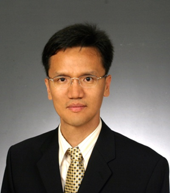
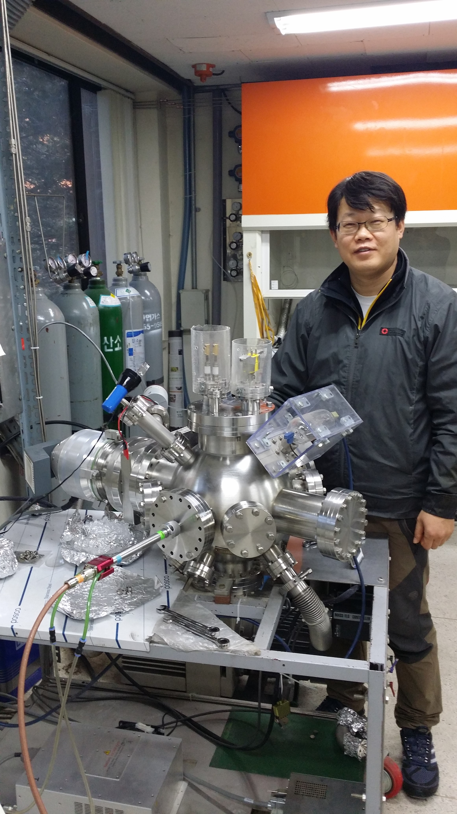
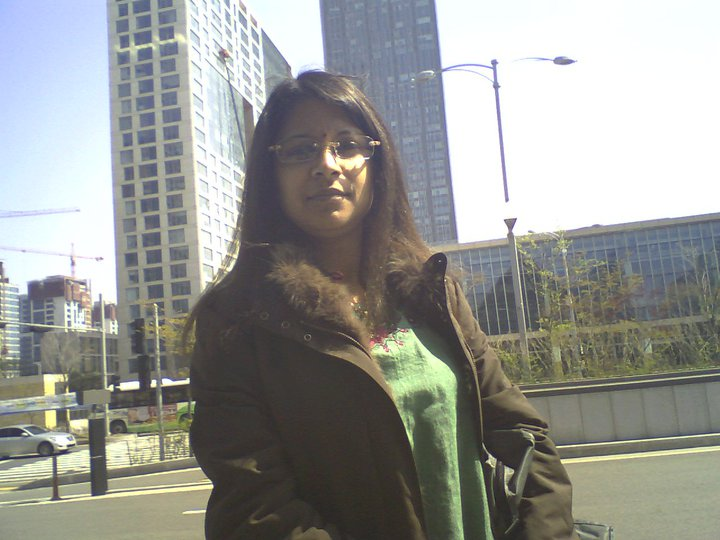

Prof. Dong Min Kim, Ph.D.
Department of Materials Science and Engineering
Hongik University, 2639, Sejong-ro, Sejong 339-701, Korea.
Tel.: 82-44-860-2558, Fax.: 82-44-862-2774
Email: dmkim@hongik.ac.kr
Education:
2000.9 - 2004.8 : Ph.D. candidate, (Thesis advisor : Professor Chang-Beom Eom)
Department of Materials Science and Engineering
University of Wisconsin-Madison.
1998.9 – 2000.8 Ph.D. candidate,
(Moved from Duke to University of Wisconsin-Madison with my Thesis advisor)
Department of Mechanical Engineering and Materials Science
Duke University.
1992.3 – 1994.2 : M.S., Department of Chemical Engineering
Yonsei University, Seoul, Korea.
1989 - 1992 Military Service
1984.3 – 1988.2 : B.S., Department of Chemical Engineering
Hanyang University, Seoul, Korea.
Ki-Seong Lee, Ph.D.
Department of Materials Science and Engineering
Hongik University, 2639, Sejong-ro, Sejong 339-701, Korea.
Fax.: 82-44-862-2774
Email: kiseonglee0@gmail.com
Education:
2011.3 - 2015.2 : Ph.D. candidate, (Thesis advisor : Professor Dong Min Kim)
Department of Materials Science and Engineering
Hongik University, Sejong, Korea.
2009.9 – 2011.2 Researcher,
Department of Materials Science and Engineering
Hongik University, Sejong, Korea.
2007.9 - 2009.8: M.S., Department of Chemical System Engineering
Hongik University, Sejong, Korea.
2000 - 2003 Military Service
1999.2 - 2007.2: M.S., Department of Chemical System Engineering
Hongik University, Sejong, Korea.
Subrata Sarker, Ph.D. Candidate
Department of Materials Science and Engineering
Hongik University, 2639, Sejong-ro, Sejong 339-701, Korea.
Fax.: 82-44-862-2774
Email: subrata@mail.hongik.ac.kr
Education:
2013.9 - to 2016.02 : Ph.D. candidate
Department of Materials Science and Engineering
Hongik University, Sejong, Korea.
2013.3 – 2013.8 : Researcher,
Department of Materials Science and Engineering
Hongik University, Sejong, Korea.
2007.9 – 2012.10 : Ph.D. candidate
(Moved from Konkuk University to Hongik University)
Department of Advanced Technology Fusion
Konkuk University, Seoul, Korea.
2001.8 - 2007.8 : Served in three different industries in Bangladesh
1999.7 - 2001.6 : M.Sc., Department of Chemistry
University of Dhaka, Dhaka, Bangladesh.
1994.6 - 1999.6 : B.Sc., Department of Chemistry
University of Dhaka, Dhaka, Bangladesh.

Young Ku Jin, Ph.D. Candidate
Department of Materials Science and Engineering
Hongik University, 2639, Sejong-ro, Sejong 339-701, Korea.
Fax.: 82-44-862-2774
Email: jinyoungku09@gmail.com
Education:
2013.3 - to date : Ph.D. candidate
Department of Materials Science and Engineering
Hongik University, Sejong, Korea.
2010.3 - 2012.2: M.S., Department of Electrical Engineering
Ajou University, Suwon, Korea.
2008.3 - 2010.2: B.S., Department of Electrical Engineering
Kyonggi University, Suwon, Korea.
2005.3 - 2007.2: (Transferred to Kyonggi) Department of Electrical Engineering
Sangdam , Yongin, Korea.
Hyun Woo Seo, Ph.D. Candidate
Department of Materials Science and Engineering
Hongik University, 2639, Sejong-ro, Sejong 339-701, Korea.
Fax.: 82-44-862-2774
Email: godson1114@naver.com
Education:
2015.3 - to date : Ph.D. Candidate
Department of Materials Science and Engineering
Hongik University, Sejong, Korea.
2013.3 – 2015.2 : M.Sc., Department of Materials Science and Engineering
Hongik University, Sejong, Korea.
2009.3 - 2013.2 : B.Sc., Department of Materials Science and Engineering
Hongik University, Sejong, Korea.
